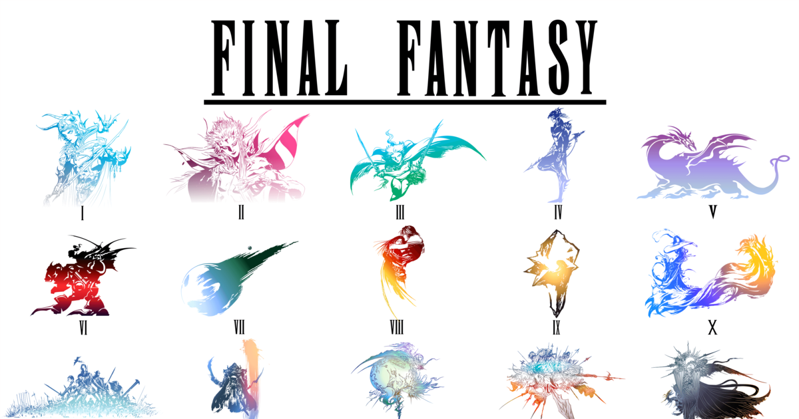

Franquia Final Fantasy I - V
Final Fantasy (ファイナルファンタジー Fainaru Fantajī?) é uma série de jogos virtuais de ficção científica e fantasia criada por Hironobu Sakaguchi e desenvolvida pela Square. É centrada em uma série de jogos eletrônicos do gênero RPG. O primeiro título da série foi Final Fantasy, lançado em 1987 e criado por Sakaguchi como seu último trabalho na indústria; o jogo acabou sendo um grande sucesso e gerou várias sequências.
Final Fantasy
A história segue quatro jovens chamados de Guerreiros da Luz, com cada um carregando uma das quatro orbes elementais de seu mundo que foram escurecidas por quatro demônios. Eles partem juntos para derrotar as forças do mal, restaurar a luz das orbes e salvar seu mundo.
Final Fantasy II
A história segue quatro jovens cujos pais foram mortos durante uma invasão militar realizada pelo império de Palamecia, que deseja conquistar todo o mundo. Três dos quatro personagens principais se juntam à rebelião contra o império, embarcando em missões para ganhar novas magias e armas, destruir super-armas e resgatar os líderes da resistência.
Final Fantasy III
A história segue quatro jovens atraídos para um cristal de luz que lhes dá poderes e os instrui a restaurar o equilíbrio do mundo. Os quatro reconhecem a importância das palavras do cristal, porém não compreendem completamente seu significado, partindo assim em uma aventura para explorar o mundo.
Final Fantasy IV
O jogo segue a história de Cecil, um cavaleiro negro que tenta impedir que o mago Golbez tome o controle de poderosos cristais e destrua o mundo. Em sua jornada ele é auxiliado por um grupo de aliados
Final Fantasy V
O jogo segue a história de um andarilho chamado Bartz que, ao investigar a queda de um meteoro, encontra vários outros personagens que revelam os perigos que os quatro cristais que controlam os elementos do mundo estão enfrentando. Esses cristais servem como selo de Exdeath, um diabólico mago. Bartz e seus companheiros partem para impedir que os cristais sejam explorados pela influência de Exdeath e que ele ressurja.